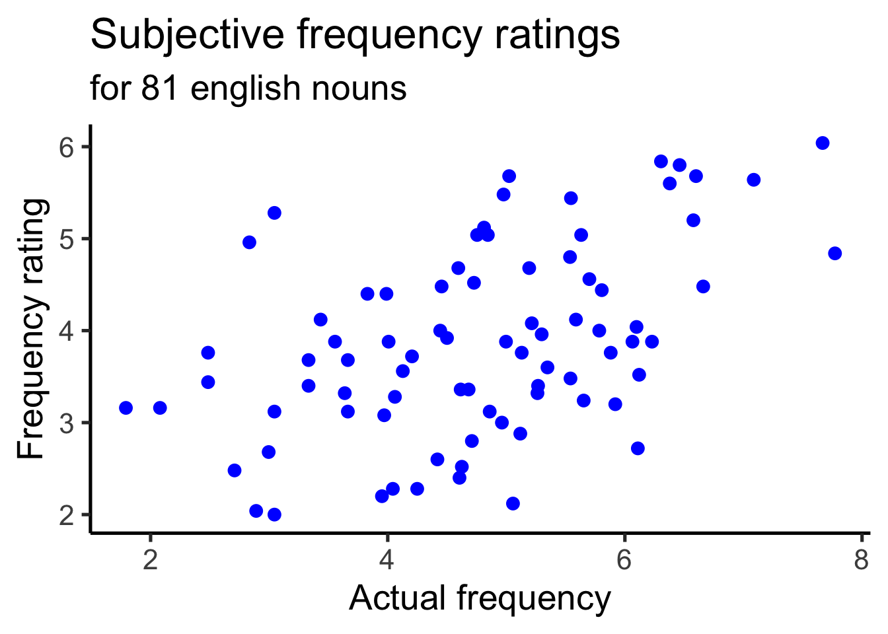
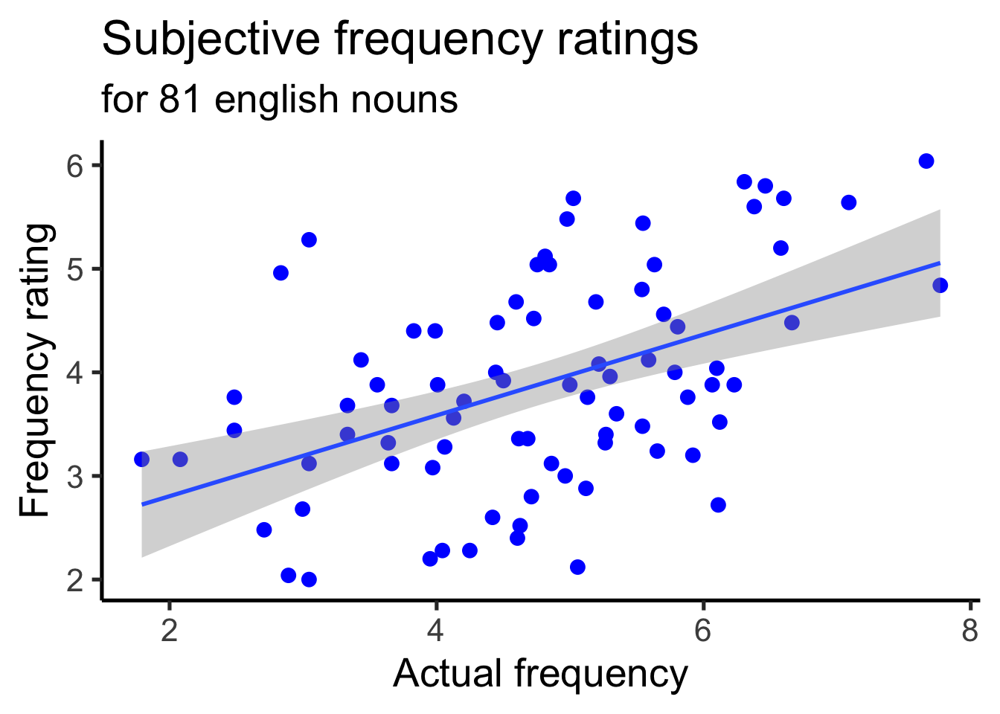
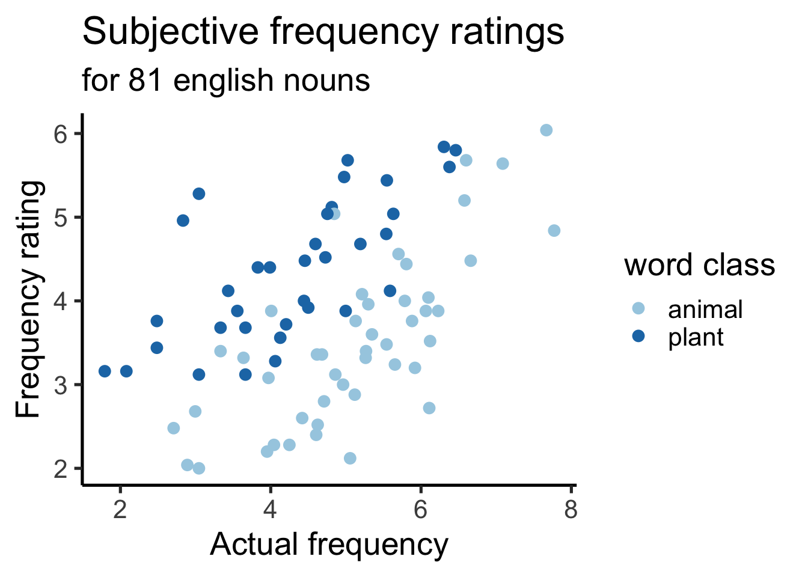
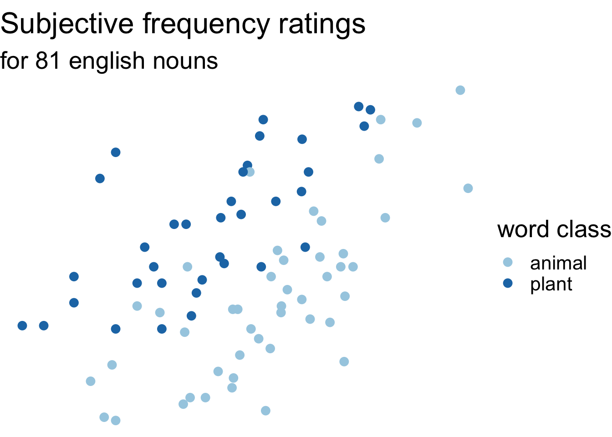

library(ggplot2)Data Visualization Day 2
Data Science for Studying Language and the Mind
0.1 Announcements
Permits have been issued! If you are on the waitlist and have not been issued a permit, please email me!
The Friday 12pm lab has 8 more seats 🙂
The course we be reopened to regular enrollment today
0.2 How are we feeling today?

0.3 You are here
0.3.0.0.1 Data science with R
- R basics
Data visualization- Data wrangling
0.3.0.0.2 Stats & Model buidling
- Sampling distribution
- Hypothesis testing
- Model specification
- Model fitting
- Model accuracy
- Model reliability
0.3.0.0.3 More advanced
- Classification
- Inference for regression
- Mixed-effect models
1 Acknowledgements
Adapted from R4DS Ch 9: Layers and some materials by Dr. Colin Rundel at Duke

Google Colab already has ggplot2 installed by default. There is no need to run install.packages().
1.1 The grammar of graphics with ggplot2

1.2 Exercise 1
The basic ggplot (review from last time!)

penguins dataframe in palmerpenguins package
Recreate the figure as faithfully as possible
1.3 Today’s data: ratings
Subjective frequency ratings, ratings of estimated weight, and ratings of estimated size, averaged over subjects, for 81 concrete English nouns. – languageR
library(languageR)
str(ratings)'data.frame': 81 obs. of 14 variables:
$ Word : Factor w/ 81 levels "almond","ant",..: 1 2 3 4 5 6 7 8 9 10 ...
$ Frequency : num 4.2 5.35 6.3 3.83 3.66 ...
$ FamilySize : num 0 1.39 1.1 0 0 ...
$ SynsetCount : num 1.1 1.1 1.1 1.39 1.1 ...
$ Length : int 6 3 5 7 9 7 6 6 3 6 ...
$ Class : Factor w/ 2 levels "animal","plant": 2 1 2 2 2 2 1 2 1 1 ...
$ FreqSingular : int 24 69 315 26 19 24 53 74 155 37 ...
$ FreqPlural : int 42 140 231 19 19 6 78 77 103 14 ...
$ DerivEntropy : num 0 0.562 0.496 0 0 ...
$ Complex : Factor w/ 2 levels "complex","simplex": 2 2 2 2 2 2 2 2 2 2 ...
$ rInfl : num -0.542 -0.7 0.309 0.3 0 ...
$ meanWeightRating: num 1.49 3.35 2.19 1.32 1.44 ...
$ meanSizeRating : num 1.89 3.63 2.47 1.76 1.87 ...
$ meanFamiliarity : num 3.72 3.6 5.84 4.4 3.68 4.12 2.12 5.68 3.2 2.2 ...1.4 Today’s data: ratings
We will make use of the following variables:
Frequency- actual word frequencymeanFamiliarity- subjective frequency ratingClass- whether word is a plant or animal
. . .
Word Frequency Class
1 almond 4.204693 plant
2 ant 5.347108 animal
3 apple 6.304449 plant
4 apricot 3.828641 plant
5 asparagus 3.663562 plant
6 avocado 3.433987 plant
7 badger 5.056246 animal
8 banana 5.023881 plant
9 bat 5.918894 animal
10 beaver 3.951244 animal
11 bee 5.700444 animal
12 beetroot 3.555348 plant
13 blackberry 4.060443 plant
14 blueberry 2.484907 plant
15 broccoli 2.833213 plant
16 bunny 3.332205 animal
17 butterfly 5.214936 animal
18 camel 6.109248 animal
19 carrot 4.976734 plant
20 cat 7.086738 animal
21 cherry 4.997212 plant
22 chicken 6.599870 animal
23 clove 3.663562 plant
24 crocodile 4.615121 animal
25 cucumber 4.454347 plant
26 dog 7.667626 animal
27 dolphin 4.007333 animal
28 donkey 5.541264 animal
29 eagle 5.117994 animal
30 eggplant 1.791759 plant
31 elephant 6.063785 animal
32 fox 5.652489 animal
33 frog 5.129899 animal
34 gherkin 2.079442 plant
35 goat 6.228511 animal
36 goose 5.267858 animal
37 grape 5.192957 plant
38 gull 4.418841 animal
39 hedgehog 3.637586 animal
40 horse 7.771910 animal
41 kiwi 3.044522 plant
42 leek 3.332205 plant
43 lemon 5.631212 plant
44 lettuce 4.812184 plant
45 lion 6.098074 animal
46 magpie 2.995732 animal
47 melon 4.127134 plant
48 mole 4.605170 animal
49 monkey 5.783825 animal
50 moose 2.708050 animal
51 mouse 5.805135 animal
52 mushroom 5.537334 plant
53 mustard 4.442651 plant
54 olive 5.587249 plant
55 orange 6.378426 plant
56 owl 4.859812 animal
57 paprika 2.484907 plant
58 peanut 4.595120 plant
59 pear 4.727388 plant
60 pig 6.660575 animal
61 pigeon 5.262690 animal
62 pineapple 3.988984 plant
63 potato 6.461468 plant
64 radish 3.044522 plant
65 reindeer 4.043051 animal
66 shark 5.880533 animal
67 sheep 6.577861 animal
68 snake 6.120297 animal
69 spider 4.844187 animal
70 squid 3.970292 animal
71 squirrel 4.709530 animal
72 stork 3.044522 animal
73 strawberry 4.753590 plant
74 swan 4.962845 animal
75 tomato 5.545177 plant
76 tortoise 4.624973 animal
77 vulture 4.248495 animal
78 walnut 4.499810 plant
79 wasp 4.682131 animal
80 whale 5.298317 animal
81 woodpecker 2.890372 animal2 Geometric objects
2.1 geom_*() aka geoms
There are many. We will start with these, and add a few additional geoms as we move through the course:
geom_histogram() |
histogram, distribution of a continuous variable |
geom_density() |
distribution of a continuous variable |
geom_bar() |
distribution of a categorical data |
geom_point() |
scatterplot |
geom_smooth() |
smoothed line of best fit |
2.2 geom_histogram()
A histogram divides the x-axis into equally spaced bins and then uses the height of a bar to display the number of observations that fall in each bin. – R4DS
. . .
2.3 geom_histogram()
bins - How many bins should we have?

2.4 geom_histogram()
binwidth - How wide should the bins be?
2.5 geom_histogram()
color - What should the outline color be?
2.6 geom_histogram()
fill - What should the fill color be?
2.7 geom_density()
Imagine a histogram made out of wooden blocks. Then, imagine that you drop a cooked spaghetti string over it. The shape the spaghetti will take draped over blocks can be thought of as the shape of the density curve. – R4DS

2.8 geom_density()
Map Class to color aesthetic
2.9 geom_density()
Set linewidth

2.10 geom_density()
Map Class to fill and set alpha

2.11 geom_bar()
To examine the distribution of a categorical variable, you can use a bar chart. The height of the bars displays how many observations occurred with each x value. – R4DS

2.12 geom_bar() - stacked
We can use stacked bar plots to visualize the relationship between two categorical variables

2.13 geom_bar() - relative frequency
We can use relative frequency to visualize the relationship between two categorical variables (as a percentage)
2.14 geom_bar() - dodged
We can use a dodged bar plot to visualize the relationship between two categorical variables side-by-side, not stacked

2.15 geom_point()
Scatterplots are useful for displaying the relationship between two numerical variables – R4DS
. . .
ggplot(
data = ratings,
mapping = aes(
x = Frequency,
y = meanFamiliarity
)
) +
geom_point(
color = "blue",
size = 3
) +
labs(
title = "Subjective frequency ratings",
subtitle = "for 81 english nouns",
x = "Actual frequency",
y = "Frequency rating",
color = "word class"
) +
theme_classic(base_size = 20) 
2.16 geom_point() with geom_smooth()
draws a best fitting curve
ggplot(
data = ratings,
mapping = aes(
x = Frequency,
y = meanFamiliarity
)
) +
geom_point(
color = "blue",
size = 3
) +
geom_smooth() +
labs(
title = "Subjective frequency ratings",
subtitle = "for 81 english nouns",
x = "Actual frequency",
y = "Frequency rating",
color = "word class"
) +
theme_classic(base_size = 20) `geom_smooth()` using method = 'loess' and formula = 'y ~ x'
2.17 geom_point() with geom_smooth(method="lm")
draws the best fitting linear model
ggplot(
data = ratings,
mapping = aes(
x = Frequency,
y = meanFamiliarity
)
) +
geom_point(
color = "blue",
size = 3
) +
geom_smooth(method="lm") +
labs(
title = "Subjective frequency ratings",
subtitle = "for 81 english nouns",
x = "Actual frequency",
y = "Frequency rating",
color = "word class"
) +
theme_classic(base_size = 20) `geom_smooth()` using formula = 'y ~ x'
2.18 geom_point() with geom_smooth(method="lm")
We can also map to color, by specifying globally
ggplot(
data = ratings,
mapping = aes(
x = Frequency,
y = meanFamiliarity,
color = Class
)
) +
geom_point(
size = 3
) +
geom_smooth(method="lm") +
labs(
title = "Subjective frequency ratings",
subtitle = "for 81 english nouns",
x = "Actual frequency",
y = "Frequency rating",
color = "word class"
) +
theme_classic(base_size = 20) `geom_smooth()` using formula = 'y ~ x'
2.19 geom_point() with geom_smooth(method="lm")
Or include only a single smooth, by specifying color in the point geom only
ggplot(
data = ratings,
mapping = aes(
x = Frequency,
y = meanFamiliarity
)
) +
geom_point(
aes(color = Class),
size = 3
) +
geom_smooth(method="lm") +
labs(
title = "Subjective frequency ratings",
subtitle = "for 81 english nouns",
x = "Actual frequency",
y = "Frequency rating",
color = "word class"
) +
theme_classic(base_size = 20) `geom_smooth()` using formula = 'y ~ x'
3 Facets
smaller plots that display different subsets of data
3.1 facet_grid()
ggplot(
data = ratings,
mapping = aes(
x = Frequency,
y = meanFamiliarity
)
) +
geom_point() +
facet_grid(Class ~ Complex) +
theme_classic(base_size = 20) 
. . .
Compare with the same data, viewed with two aesthetics (color and shape)

3.2 facet_grid() - just columns

3.3 facet_grid() - just columns
and note we can still map other aesthetics!
3.4 facet_grid() - just rows

3.5 facet_wrap()
3.6 facet_wrap() - number of columns
4 Helper functions
4.1 remember our goal plot?
ggplot(
data = ratings,
mapping = aes(
x = Frequency,
y = meanFamiliarity
)
) +
geom_point(
mapping = aes(color = Class),
size = 3
) +
labs(
title = "Subjective frequency ratings",
subtitle = "for 81 english nouns",
x = "Actual frequency",
y = "Frequency rating",
color = "word class"
) +
theme_classic(base_size = 20) +
scale_color_brewer(palette = "Paired")
4.2 last_plot()
returns the last plot
last_plot()
4.3 ggsave()
saves last plot
ggsave("plot.png", width=5, height=5)Shows up in the files (left side-bar) on Google Colab!
5 Themes
ggplot comes with many Complete themes
5.1 Default theme
last_plot() + theme_gray(base_size=20)
5.2 Sample themes
last_plot() + theme_bw(base_size=20)
last_plot() + theme_classic(base_size=20)
last_plot() + theme_minimal(base_size=20)
last_plot() + theme_void(base_size=20)
6 Shortcuts
6.1 ggplot2 calls
Explicit argument names:
ggplot(
data = ratings,
mapping = aes(
x = Frequency,
y = meanFamiliarity
)
) +
geom_point()
Implied argument names:
ggplot(
ratings,
aes(
x = Frequency,
y = meanFamiliarity
)
) +
geom_point()
6.2 the pipe %>%
the pipe takes the thing on its left and passes it along to the function on its right
library(magrittr)6.3 the pipe %>%
the pipe takes the thing on its left and passes it along to the function on its right
. . .
x %>% f(y) is equivalent to f(x, y)
. . .
x <- c(1.0, 2.245, 3, 4.22222)
x[1] 1.00000 2.24500 3.00000 4.22222# pass x as an argument to function usual way
round(x, digits = 2)[1] 1.00 2.24 3.00 4.22. . .
# pass x as an argument to function with pipe
x %>% round(digits = 2)[1] 1.00 2.24 3.00 4.22There are two ways to write the pipe: %>% or |>
6.4 the pipe %>% and ggplot
Implied argument names:

Note that we pipe %>% in arguments to functions but we ADD + layers to ggplot. Common mistake!
6.5 Exercise 2
Practice adding aesthetics and layers by creating this!

penguins dataframe in palmerpenguins package
6.6 Exercise 3
Need a challenge? Use the
datasaurus_dozendata from thedatasauRusR package to create this!
── Attaching core tidyverse packages ──────────────────────── tidyverse 2.0.0 ──
✔ dplyr 1.1.4 ✔ readr 2.1.5
✔ forcats 1.0.0 ✔ stringr 1.5.1
✔ lubridate 1.9.3 ✔ tibble 3.2.1
✔ purrr 1.0.2 ✔ tidyr 1.3.1
── Conflicts ────────────────────────────────────────── tidyverse_conflicts() ──
✖ tidyr::extract() masks magrittr::extract()
✖ dplyr::filter() masks stats::filter()
✖ dplyr::lag() masks stats::lag()
✖ purrr::set_names() masks magrittr::set_names()
ℹ Use the conflicted package (<http://conflicted.r-lib.org/>) to force all conflicts to become errors